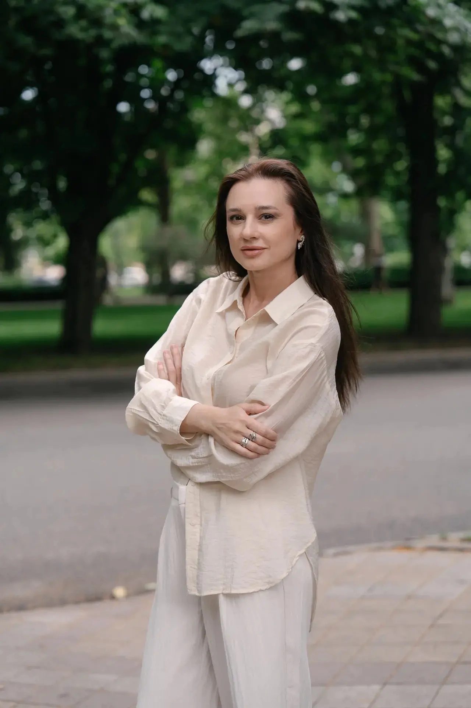
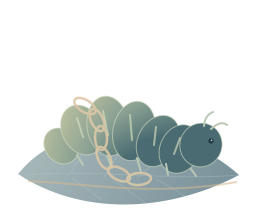
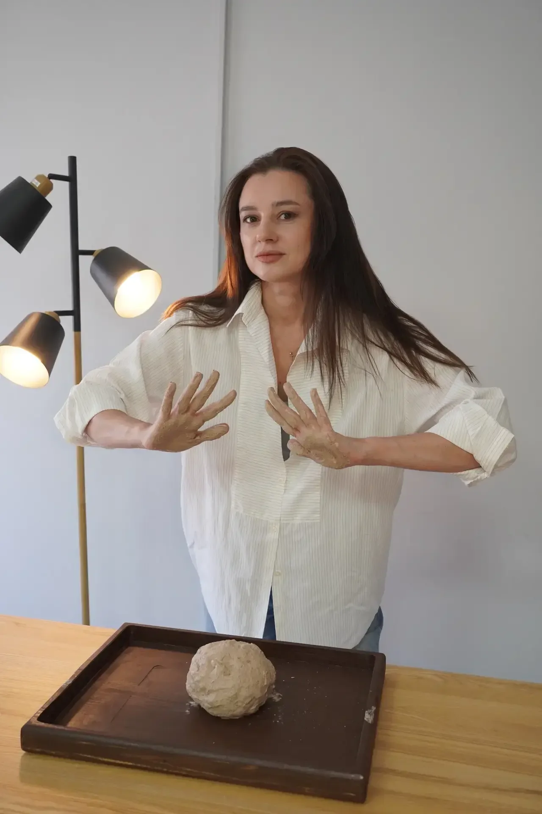

2005 · Высшее образование
Психология
Кубанский государственный университет. Квалификация «Психолог. Преподаватель психологии».
 Открыть диплом
Открыть диплом Карта внутренних территорий
Даже если сейчас непросто. Вместе исследуем то, что происходит с вами, — чтобы лучше слышать свои чувства и находить опору в собственном выборе.
Первый шаг — разговор с Надеждой в Telegram. В вашем темпе.

Образы перемен
В своём темпе, с правом на паузу. Перемены не всегда идут по прямой.

Иногда внутри становится тесно: тревога, страх, чужие ожидания.

Кризис может стать временем паузы, исследования и внутренней работы.

Постепенно появляется больше ясности, контакта с собой и выбора.
Больше места для живости, творчества и самовыражения.
Это образы возможных перемен. У вашего пути нет обязательных этапов и сроков.
Ваши внутренние территории
Откройте близкую вам тему. Если своей здесь не нашли — об этом тоже можно поговорить.
Тревожные и депрессивные состояния, панические атаки, ПТСР и кПТСР. Психосоматические проявления, телесные реакции и психологическая адаптация после физических травм.
Можно начать с того, что вы чувствуете, даже если пока трудно найти слова.
Неуверенность, самокритика, чувство вины и трудности с принятием себя. Эмоциональные трудности, потеря интереса и ощущение пустоты.
Исследуем, что помогает поддерживать себя и обходиться со своими чувствами.
Личные границы, сепарация и детско-родительские отношения. Детские травмы и травмы развития, чужие ожидания и трудность сказать «нет».
Из детства во взрослость: как замечать свои желания и принимать собственные решения.
Отношения в паре, конфликты, одиночество и трудности с близостью. Вопросы сексуальности и половой идентичности, желания и отношение к собственному телу.
Говорим о том, что для вас важно, с уважением к вашим границам.
Страх оценки, трудность выражать себя, творческий поиск и потеря вдохновения. Возможность исследовать чувства через образы, глину и другие арт-практики.
Уметь рисовать или лепить не обязательно. Можно пробовать и замечать, что вам откликается.
Самопознание, жизненные перемены и поиск смысла. Профориентация, смена профессии, бизнес-психология и вопросы собственного дела.
Посмотрим, чего хочется именно вам и на что можно опереться в выборе.
Для первой встречи достаточно своих слов. Точно формулировать запрос заранее не обязательно.

Обо мне
10 летопыта в психологии
Мне важно, чтобы рядом со мной не нужно было производить правильное впечатление. В терапию можно приходить без роли и без готовых правильных ответов — в любом своём состоянии.
В работе я опираюсь на искренность и эмпатию. Для меня особенно важны бережность, уважение к опыту человека и безопасное пространство, где можно постепенно восстанавливать контакт с собой.
Я психолог, гештальт-терапевт, клинический психолог, арт-терапевт и психолог-сексолог. Работаю с чувствами, отношениями и телесными реакциями, развиваю арт-подход в творческой студии и авторские методы глинотерапии в индивидуальной практике и терапевтических группах.

Мне важно оставлять человеку время: прислушаться к себе, попробовать, передумать. В работе мы идём в том темпе, который вам подходит.
2005 · Высшее образование
Кубанский государственный университет. Квалификация «Психолог. Преподаватель психологии».
Открыть диплом 2006 · Высшее образование
Кубанский государственный университет, обучение в 2002–2006 годах.
Подтверждение образования2024 · 744 часа
Профессиональная переподготовка. Институт прикладной психологии в социальной сфере.
 Открыть диплом
Открыть диплом 2026 · Сертификат
Теория и практика гештальт-терапии. Программа «Московский Гештальт Институт».
 Открыть сертификат
Открыть сертификат 2025 · 565 часов
Профессиональная переподготовка. Институт прикладной психологии в социальной сфере.

2023 · 320 часов
Профессиональная переподготовка. Институт прикладной психологии в социальной сфере.
 Открыть диплом
Открыть диплом Инструменты
Разговором, вниманием к чувствам, образами. Выберем то, что поможет вам говорить о важном.
Как камера выделяет фигуру из фона, так мы можем заметить чувство или потребность среди привычных забот. Фокус меняется вместе с тем, что важно вам сейчас.
Гештальт-подходКогда словам трудно появиться, можно обратиться к образам, цвету и творчеству — чтобы выразить и исследовать свои переживания.
Арт-терапияПространство для разговора о близости, желаниях, границах и отношении к собственному телу. С вниманием к тому, что комфортно обсуждать.
Психология сексуальностиТелесные ощущения тоже заслуживают внимания. Исследуем их связь с переживаниями и то, как вы проживаете изменения в своём теле.
Телесно-ориентированная практикаВ этой работе есть место паузам, новым вопросам и изменениям, для которых нужно время.
Наше пространство · Краснодар
«Нараяна» — пространство, где психология соединяется с арт-терапией, творчеством и свободой самовыражения.
Гончарная мастерская «Нараяна»
Я развиваю методы глинотерапии в индивидуальной работе и терапевтических группах. Можно мять глину, искать форму, замечать ощущения. Уметь лепить не нужно.
Можно исследовать себя не только через слова.
Гончарный мастер-класс и арт-терапевтическая встреча — разные форматы. Подходящий вариант обсудим заранее.
Обсудить форматНаписать Надежде в Telegram
Здесь мы встречаемся
На карте точка называется «Нараяна» — это наш адрес. Время и детали визита согласуем при записи.


Индивидуальные консультации
Можно прийти с конкретной ситуацией или с ощущением «мне непросто, и я хочу разобраться».
Расскажите в Telegram немного о себе и о том, с чем хочется прийти. Достаточно нескольких слов.
До встречи согласуем формат, длительность, стоимость и подходящее время.
Поговорим о вашей ситуации и о том, как может строиться дальнейшая работа.
Ваш первый шаг
Можно начать с «Здравствуйте».
Я Надежда. Давайте знакомиться.
Написать Надежде в Telegram
@nv_yaya